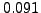

There are mainly two interpretations of the frequency resolution. It is either calculated as the inverse time interval width (Rayleigh frequency resolution),
In order to enhance the flexibility of CINDERELLA, the frequency resolution is computed as
CINDERELLA checks for frequencies in the comparison datasets are within the frequency resolution around each frequency in the target dataset.
Example. The sample cand contains the same input as CinderellaNative (p. ), and the file cand.cnd contains the line
), and the file cand.cnd contains the line
tol 2
The frequency tolerance parameter is increased compared to the default value 0, which means that the intervals taken into account to search for corresponding signal components are tendentially narrower. This setting is for demonstration only; in normal applications, only frequency tolerance parameters ranging from 0 to 1 will make sense.
The effect of this modification is visible, e.g., comparing the output files 000001.cd.000000.dat of the project CinderellaNative to the project cand. In the project CinderellaNative, this file contains the line
58.3815412948909298 -8.8063413553403507 -5.6290446018702553
whereas the corresponding line in the project cand is
58.3815412948909298 2.1858505500938747 0.3972034177439077
In the project CinderellaNative, the 14th component in the SIGSPEC result file 000001.result.dat in the project directory is related to the 47th component in the file 000000.result.dat. The two frequencies differ by 0.054, and the Rayleigh frequency resolution of the target dataset is , which is sufficient for a correspondence. In the project cand, the target sig of 2.387 becomes relevant. Eq.3 yields a frequency resolution 0.042 for this component, which is now too small for a coincidence. The corresponding line in the file 000001.cd.000000.dat consistently indicates that no coincident peak is found for this signal component. In this case, CINDERELLA uses a default sig threshold for the comparison data, see ``Spectral significance threshold'', below.


Next: Spectral significance threshold
Up: Candidate selection
Previous: Candidate selection
Contents
Piet Reegen
2009-09-23